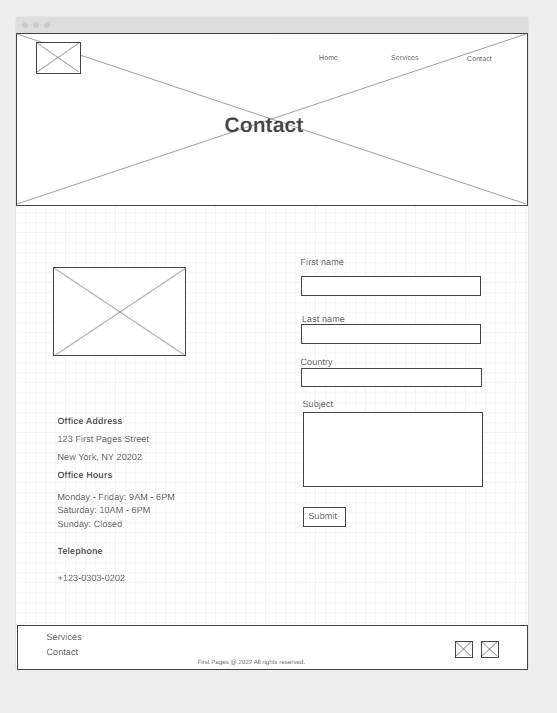

Overview
Purpose
We build websites for businesses and optimize them to appear on the first page of a search engine result.
Audience
We cater to the needs of first-time business owners to have an online presence. Almost everything in the world has gone digital, and technology plays a critical role in the success of any business. From making purchases, to logistics, to advertising, having a website or an application counts towards the success of any business. At First Pages, we not only build websites for first-time businesses but also ensure that we optimize their websites to appear on the first pages of major search engines. Our services are affordable because we customize them to the needs of our clients.
Branding
Website Logo
.png)
Style Guide
Color Palette
Palette URL: https://coolors.co/111213-747474-892304-e9e9e9-ffffff| Primary | Secondary | Accent 1 #111213 | Accent 2 | Accent 3 |
|---|---|---|---|---|
| #892304 | #747474 | #111213 | #E9E9E9 | #FFFFFF |
Typography
Heading Font: IM Fell French Canon SC
Paragraph Font: Georgia
Normal paragraph example
Having a successful business has gone beyond good intentions to make a profit or even provides outstanding services to the society. In these days of advanced technologies, it is easy to get lost in the crowd. There is an estimated 213 million companies worldwide. So, imagine that you do not have an online presence, or even if you do, how does your business rank? At Frist Pages Consulting, we have solved those problems for you by creating an online presence for your business through website development and make sure that your website ranks high in search results. We are good at what we do and our success stories have proved it.
Colored paragraph example
Count on us to take your business from where you are today to where you would like it to be.
Navigation
Site Map
Content
Home page
The homepage usually termed "Home" is the first web page that a visitor to the website will see and interact with they visit the website. The homepage contains basic information about what the entire website is all about. It is like an introduction to what the website intends to accomplish. For example, a visitor to the site can easily differentiate a website that provides insurance services from a religious website. The homepage provides this information. The homepage also serves as a link to other pages of the website. It's like the main entrance door of a house that provides access to other rooms in the house. From the home page, you can move to any other page on the website. This homepage, contains some images. It has the hero image, which is more like a bold picture that covers a significant part of the homepage. One of the images is the hero image, while the other one is for one of the testimonials.
Images for the Home page
 >
>
 >
>
Services
The second page on the homepage is a child page. A child page provides additional information that the homepage may not. It contains more detailed information regarding the services or products that a website offers. There can be many child pages of a website, with each containing specific information as it relates to that page. The second child page of this website is the "services" page. It contains the information of the services that the business offers. You can find all of the information for the clients to make decision on this page. The child page is for informational, transactional purposes. There is no limit to how many child pages that a website contains. The images are for the banner image, and for the service offerings.
Images for the Page 2


Contact
The third page is another child page called "contact". Just like the second child page, this page contains information about the contact for the business. You can find more details about the contact inforamtion, which you would not otherwise find on the homepage. Usually, this page contains the email address, phone number, office location or even a contact form for users to reach out to the business. The contact page is not usually transactional unlike other child pages. It is to provide detailed contact information. The images are for the map location of the office address and the other for the banner image on of the page.
Images for the Page 3


Wireframes
Create three wireframes for your site. One for each page and list them here
Home
This is the homepage of the first pages website, where visitors to the website see our service offerings. The homepage also contains testimonials from existing clients.
Services
The services page provides more details about services and how it benefits our customers and their business. We offer three services. The first is website design, website developnment and search engine optimization.
Contact
Visitors to the website can see various ways to reach out to us. The page provides our office address, telephone number and email addresses for clients and partnerships. The page also provides information on our opening days and hours. 